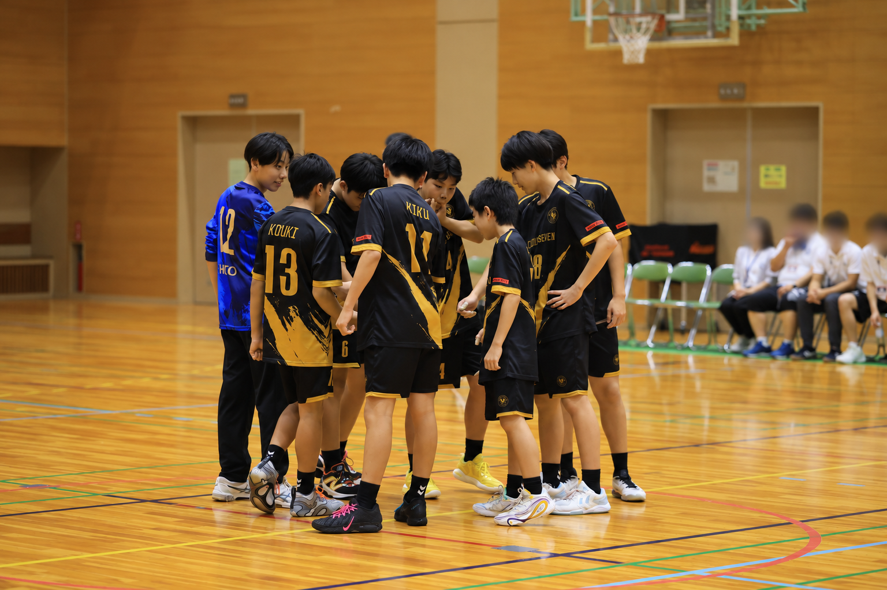

- 対象
- 中学生男女
- 定員
- 男女別・最大12名程度／先着順
- 受付
- 定員に達し次第終了・個別体験は随時
- 男子チーム
- 月6,000円／土日祝日・6〜8時間
女子は他チームと合同で活動中です。現在の募集状況や女子の活動条件はLINE公式でご案内します。

1年生中心のチームに、最近は2年生も数人加入。学年を越えた関わりが増え、練習にも活気が生まれています。
今のチームと、練習で育つ力タップして詳しく見る ＋詳しい説明を閉じる −
新しく加わる仲間と、一緒にチームをつくる
1年生を中心に挑戦してきたチームに、2年生の仲間も加わりました。違う経験や考え方に触れながら、互いの良さを学んでいます。新しく入る選手にも、自分の意見や「やってみたい」を伝えてほしいと考えています。
午前の基礎を、午後のプレーにつなげる
午前｜基礎をじっくり
基本の動きを繰り返し、自分の課題に向き合う時間。土台を積み重ねることを大切にしています。
午後｜複合練習へ
身につけた動きを組み合わせ、仲間と連携する練習へ。状況を見て考え、選んでプレーする力につなげます。
上記は普段の練習の流れです。当日の内容・時間は日程や会場によって異なります。
学年や所属を越えて、実戦経験を重ねる
人数が足りない場面では、クラウドセブンプラスの選手や、ハンドボールでの進学に向けて練習を続ける3年生と一緒に活動。さまざまな相手とプレーすることで、チーム内だけでは気づかなかった課題にも出会えます。
真剣に、楽しく。ミスの次に挑戦できる雰囲気
真剣に取り組む中でも、前向きな言葉を掛け合うことを大切にしています。ミスをして終わりではなく、「次はどうするか」を考えて、もう一度挑戦する。その積み重ねを、仲間と支え合います。
全国を目指す環境と、選手主体の挑戦
技術・体力・戦術を科学的に伸ばす指導に加え、練習メニューの提案や試合後の振り返りも選手自身で。自由に意見を伝えることと、責任を持って行動することを大切にします。
保護者の皆さまへ
お子さまが失敗したとき、周りがどう声を掛けるか。分からないことを質問できるか。体験では、プレーの上手さだけでなく、そんな関わり方も見ていただきたいと思っています。勝敗とともに、自分で考え、仲間に伝え、立て直す力を育んでいきます。
練習時間や送迎など、通い続けられるか気になることもご相談ください。無料送迎は最寄りの場所で待ち合わせて行っています。対応できる場所・日程は個別にご案内します。
LINE公式で「中学生の体験希望」と相談する